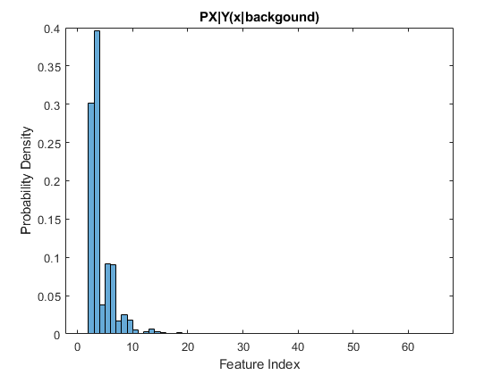
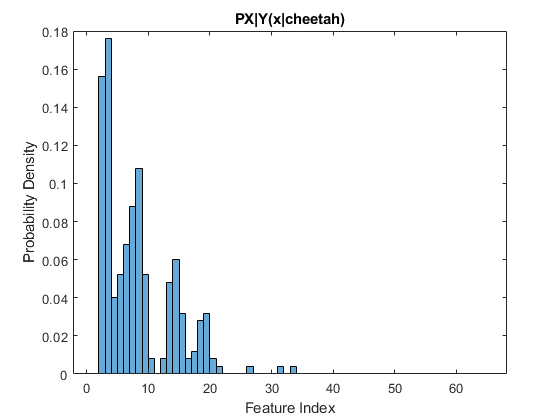
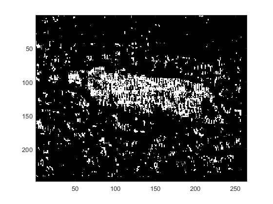
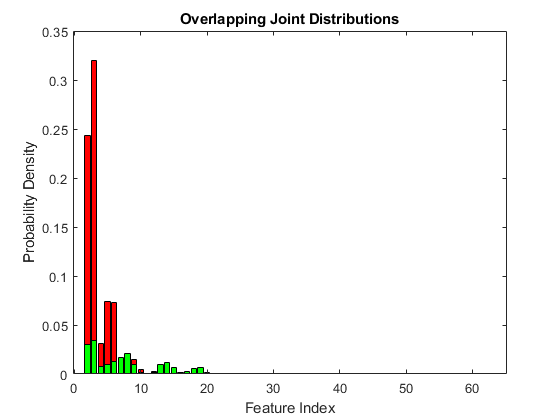
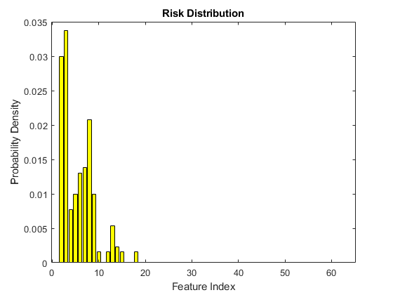

clc;
clear;
load('TrainingSamplesDCT_8.mat');
[rows_FG, cols_FG] = size(TrainsampleDCT_FG);
[rows_BG, cols_BG] = size(TrainsampleDCT_BG);
FG_training_elements = rows_FG*cols_FG;
BG_training_elements = rows_BG*cols_BG;
total_training_elements = FG_training_elements + BG_training_elements;
prior_cheetah = FG_training_elements/total_training_elements;
prior_background = BG_training_elements/total_training_elements;
BG_indices = [];
FG_indices =[];
for i=1:rows_BG
[sorted_BG,index_BG] = sort(abs(TrainsampleDCT_BG(i,:)),'descend');
BG_indices =[BG_indices, index_BG(2)];
end
for i=1:rows_FG
[sorted_FG,index_FG] = sort(abs(TrainsampleDCT_FG(i,:)),'descend');
FG_indices =[FG_indices, index_FG(2)];
end
BG_hist=figure;
h_bg=histogram(BG_indices,1:65,'Normalization','pdf');
xlabel('Feature Index');
ylabel('Probability Density');
title('PX|Y(x|backgound)');
savefig(BG_hist,'BG_PDF');
FG_hist=figure;
h_fg=histogram(FG_indices,1:65,'Normalization','pdf');
xlabel('Feature Index');
ylabel('Probability Density');
title('PX|Y(x|cheetah)');
savefig(FG_hist, 'FG_PDF');
cheetah_img = imread('cheetah.bmp');
cheetah_img = im2double(cheetah_img);
[cheetah_rows, cheetah_cols] = size(cheetah_img);
cheetah_img = cheetah_img(1:8*floor(cheetah_rows/8),1:8*floor(cheetah_cols/8));
[cheetah_rows, cheetah_cols] = size(cheetah_img);
cheetah_row_blocks = cheetah_rows/8;
cheetah_col_blocks = cheetah_cols/8;
zz = load('Zig-Zag Pattern.txt');
zz = zz+1;
zz = zigzag(zz);
new_image = zeros(cheetah_rows, cheetah_cols);
prob_error = 0.0;
for i=1:cheetah_cols-7
for j=1:cheetah_rows-7
block = cheetah_img(j:7+j,i:7+i);
block_dct = dct2(block);
zzblock_dct = zigzag(block_dct);
[sorted_zzblock_dct,feature_indices] = sort(abs(zzblock_dct),'descend');
feature=feature_indices(2);
T_star = prior_cheetah/prior_background;
choose_background = h_bg.Values(feature)/h_fg.Values(feature);
if choose_background < T_star
new_image(j:j,i:i) = 1;
end
end
end
figure
imagesc(new_image);
colormap(gray(255));
joint_hist_overlap = figure;
joint_histb=bar(prior_background*h_bg.Values,'r');
hold on
joint_histc=bar(prior_cheetah*h_fg.Values,'g');
xlabel('Feature Index');
ylabel('Probability Density');
title('Overlapping Joint Distributions');
savefig(joint_hist_overlap,'BG_PDF');
hold off
error_vals =[];
for i=1:length(joint_histb.YData)
if joint_histb.YData(i) ~= 0 && joint_histc.YData(i) ~= 0
if joint_histb.YData(i) < joint_histc.YData(i)
error_vals = [error_vals joint_histb.YData(i)];
elseif joint_histb.YData(i) > joint_histc.YData(i)
error_vals = [error_vals joint_histc.YData(i)];
end
else
error_vals = [error_vals 0];
end
end
figure
risk_plot=bar(error_vals,'y');
xlabel('Feature Index');
ylabel('Probability Density');
title('Risk Distribution');
error_probability = sum(error_vals);
cheetah_mask = double(imread('cheetah_mask.bmp')/255);
counter_correct = 0;
total_pixels = cheetah_rows*cheetah_cols;
for i=1:cheetah_rows
for j=1:cheetah_cols
if cheetah_mask(i,j) == new_image(i,j)
counter_correct = counter_correct + 1;
end
end
end
percent_correct = counter_correct/total_pixels*100;
    